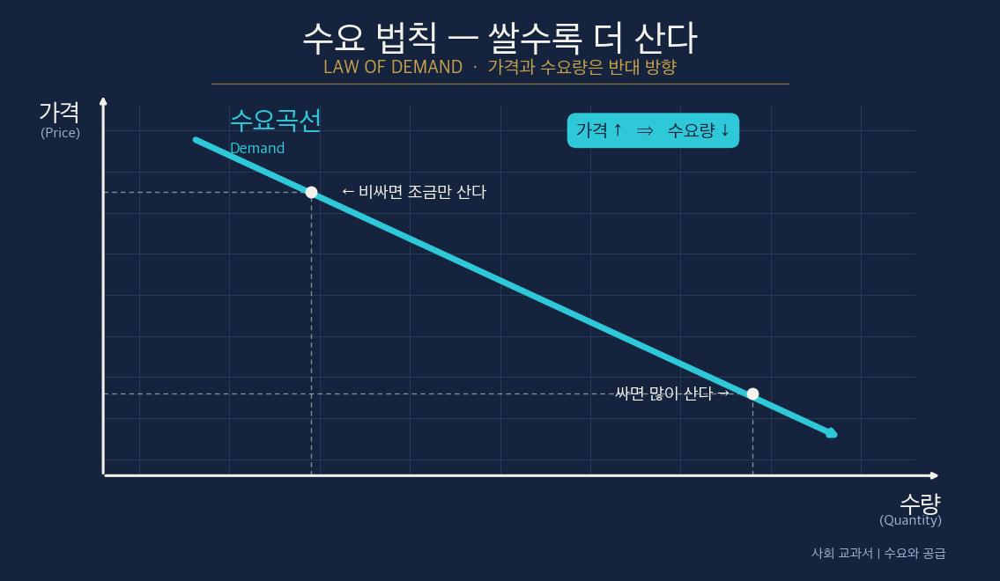
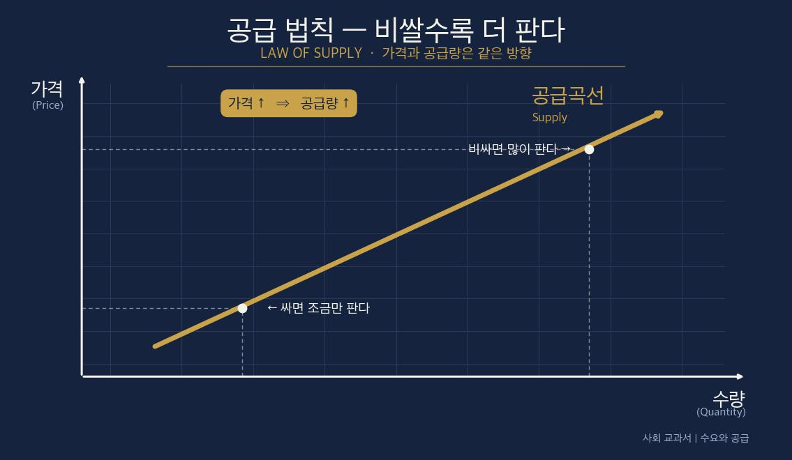
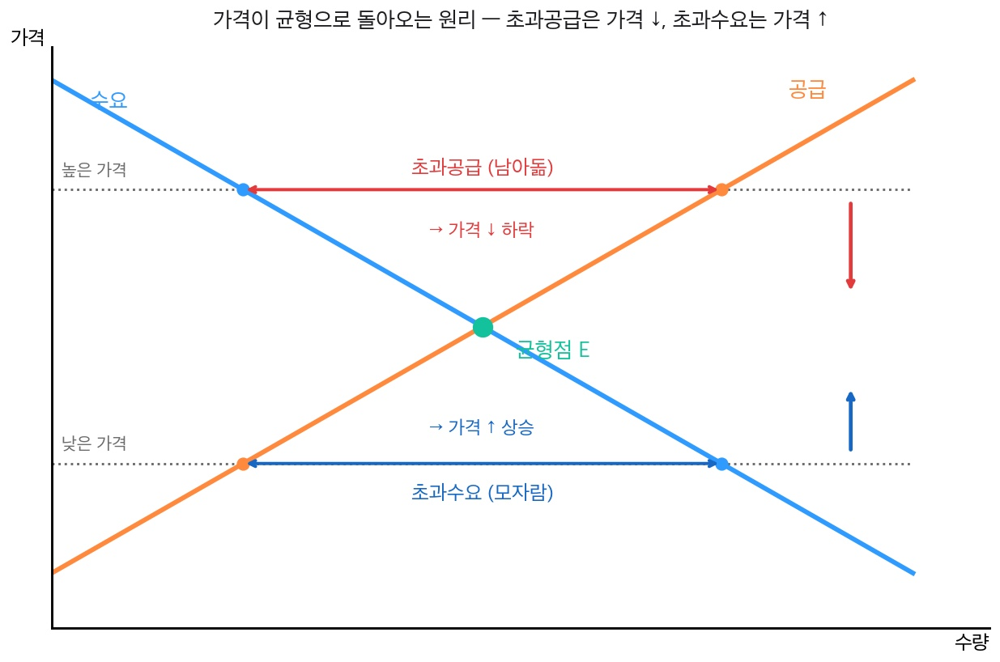

사회② Ⅳ단원 — 정가 19만 원짜리 티켓이 왜 800만 원이 될까?
정가 19만 원짜리 티켓이 왜 800만 원이 될까?

📌 학습 목표
- 수요·공급의 의미와 수요 법칙·공급 법칙을 설명할 수 있다.
- 균형 가격·균형 거래량이 어떻게 결정되는지 그래프로 설명할 수 있다.
- 수요·공급의 변화에 따른 가격 변동을 예측할 수 있다.
✨ 오늘의 어휘 (교과서)
- 수요 / 수요량: 사려는 욕구가 수요, 일정한 가격에서 사려는 구체적인 양이 수요량
- 공급 / 공급량: 팔려는 욕구가 공급, 일정한 가격에서 팔려는 구체적인 양이 공급량
- 균형(均衡): 수요량과 공급량이 같아져 가격이 더 움직이지 않는 상태
- 초과(超過): 한쪽이 다른 쪽보다 넘치는 것 (초과수요·초과공급)
📖 1단계: 도입 — 누가 이 가격을 정했을까?
🎙️ 자, 너 NCT WISH나 세븐틴 콘서트 가고 싶었던 적 있지? 2025년 NCT WISH VIP석 정가가 19만 8천 원이었어. 근데 리셀 사이트에선 최대 800만 원에 팔렸다. 무려 40배. 누가 그 가격을 정했을까? 회사? 아니야. 사려는 사람은 많은데(수요) 자리는 정해져 있으니까(공급) 가격이 미친 듯이 올라간 거야.
💬 이게 너랑 무슨 상관일까?
마트에서 사과가 작년보다 18% 비싸진 것도, 한정판 운동화가 700만 원인 것도, 전부 같은 원리 하나로 설명된다. 그게 오늘의 주제 — 수요와 공급이다.
📖 2단계: 수요 — 쌀수록 더 사고 싶다
①는 어떤 상품을 사려는 욕구이고, 일정한 가격에서 실제로 사려는 양을 ②이라 한다.
가격이 오르면 사려는 양이 줄고, 가격이 내리면 사려는 양이 늘어난다.
이렇게 가격과 수요량이 반대로 움직이는 것을 ③이라 한다.
(교과서 원문: "가격이 하락함에 따라 수요량이 증가하고, 가격이 상승함에 따라 수요량이 감소하는데, 이러한 가격과 수요량의 관계를 수요 법칙이라고 한다." 천재교육 사회②(구정화) p.76~77 · 지도서 22차시)
그래서 수요곡선은 오른쪽 아래로 내려가는 ④ 모양이다.

🎙️ 생각해 봐. 떡볶이가 1인분 2천 원이면 매일 사 먹지? 근데 1만 원으로 오르면? "오늘은 참자…" 하지. 비싸지면 덜 산다. 이게 수요 법칙이야. 어려운 말 같지만 너 이미 매일 그렇게 살고 있어.
📖 3단계: 공급 — 비쌀수록 더 팔고 싶다
⑤는 어떤 상품을 팔려는 욕구이고, 일정한 가격에서 실제로 팔려는 양을 ⑥이라 한다.
가격이 오르면 팔려는 양이 늘고, 가격이 내리면 팔려는 양이 줄어든다.
가격과 공급량이 같은 방향으로 움직이는 것을 ⑦이라 한다.
그래서 공급곡선은 오른쪽 위로 올라가는 ⑧ 모양이다.

🎙️ 사장님 입장에서 봐. 떡볶이가 1만 원에 팔리면 "오늘 100인분 만들자!" 하지. 2천 원이면 "에이, 조금만 하자." 비싸게 팔리면 더 많이 내놓는다. 수요랑 정반대 방향이지?
📖 4단계: 균형 가격 — 두 곡선이 만나는 점
수요곡선과 공급곡선을 한 그래프에 그리면 딱 한 점에서 만난다. 이 교차점에서 수요량과 공급량이 같아지고, 이때의 가격을 ⑨, 이때의 거래량을 ⑩이라 한다.

(교과서 원문: "균형은 수요량과 공급량이 일치하는 상태로, 외부에서 충격이 발생하지 않는 이상 움직이지 않는다. 이때의 가격을 균형 가격(시장 가격), 거래되는 양을 균형 거래량이라고 한다." 천재교육 사회②(구정화) p.78~79 · 지도서 23차시 학습 내용 정리)
💡 왜 '균형'을 배울까? — 균형 가격이 곧 우리가 보는 모든 가격이기 때문.
편의점·다이소·온라인에서 보는 가격표는 전부 이 교차점에서 나온 값이다. "가격은 도대체 어떻게 정해지나?"라는 질문의 답이 바로 균형이다. 그래서 이 개념이 나온다.
균형이 알려 주는 세 가지
- ① 남지도, 모자라지도 않는다. 균형에서는 팔려는 양과 사려는 양이 딱 맞아서, 만든 물건은 다 팔리고 사고 싶은 사람은 다 산다 → 낭비 없는 가격.
- ② 아무도 명령하지 않았다. 정부도 사장님도 "이 가격으로 팔아!"라고 못 박지 않았다. 수많은 사람의 선택이 모여 저절로 한 점에 모인다.
- ③ 균형 거래량 = 사회가 실제로 사고파는 양. 너무 많지도 적지도 않은, 시장이 합의한 양이다.
🎙️ 콘서트 티켓을 떠올려 봐. 회사가 매긴 정가가 균형 가격보다 낮으면 → 사려는 사람이 팔 자리보다 훨씬 많아 1초 컷 품절 → 못 산 사람은 800만 원 리셀로 간다. 즉 정가 ≠ 균형일 때 품절과 웃돈이 생기는 거야. 균형 가격은 결국 "시장이 진짜로 매긴 가격"인 셈이지.
⭐ 반전 (읽기만) — 가격은 누구의 편도 아니다. "재화 가격을 보고 소비자는 구매 여부를, 생산자는 생산 여부를 결정합니다. 가격은 어느 편도 들지 않고 중립적이기에 공정합니다." (앨프리드 밀 『드디어 만나는 경제학 수업』) → 가격은 신호등 같은 거야. 빨갛게(비싸게) 되면 사는 사람은 멈추고 파는 사람은 움직인다.
📖 5단계: 가격은 어떻게 균형으로 돌아오나
처음 가격이 균형보다 낮으면 — 사려는 양이 팔려는 양보다 많아진다. 이걸 ⑪라 하고, 물건이 부족해 가격이 ⑫한다.
처음 가격이 균형보다 높으면 — 팔려는 양이 사려는 양보다 많아진다. 이걸 ⑬이라 하고, 물건이 남아 가격이 ⑭한다.
🎙️ 콘서트 티켓이 딱 이거야. 자리(공급)는 정해졌는데 가고 싶은 사람(수요)이 폭발 → 초과수요 → 가격이 800만 원까지 치솟음. 반대로 유행 지난 굿즈는 사려는 사람이 뚝 → 초과공급 → 중고가 폭락. 아무도 안 시켰는데 가격이 알아서 움직인다.

📖 6단계: 가격 변동 4시나리오 — 시험 단골
| 상황 | 균형 가격 | 균형 거래량 | 실제 사례 (2025) |
| 수요만 증가 | 오른다 ↑ | 늘어난다 ↑ | NCT 콘서트 인기 폭발 → 티켓값 ↑ |
| 수요만 감소 | 내린다 ↓ | 줄어든다 ↓ | 유행 지난 한정판 굿즈 리셀가 ↓ |
| 공급만 증가 | 내린다 ↓ | 늘어난다 ↑ | 딸기 출하량 +4.5% → 딸기값 ↓ |
| 공급만 감소 | 오른다 ↑ | 줄어든다 ↓ | 사과 생산 -2.6% → 도매가 +18.8% ↑ |
💡 암기 팁: 수요가 움직이면 가격과 거래량이 같은 방향, 공급이 움직이면 가격과 거래량이 반대 방향으로 간다.
🔗 핵심 정리 — 한 줄로
가격은 ① 수요(쌀수록 더 산다)와 ② 공급(비쌀수록 더 판다)이 ③ 만나는 점(균형)에서 정해지고, ④ 수요·공급이 변하면 가격도 따라 움직인다.
✏️ 활동
활동 1. 가격 탐정 — 무엇이 변했나? 🕵️ (○×)
각 상황을 읽고 문장이 맞으면 ○, 틀리면 ×. 수요·공급 중 무엇이 변했는지 먼저 짚어 봐.
| 번호 | 상황 | ○ / × |
| 1 | 폭염으로 배추 수확이 줄면, 배추 가격은 오른다. | |
| 2 | 신곡이 대박 나 콘서트 가려는 팬이 폭증하면, 티켓 거래량은 줄어든다. | |
| 3 | 딸기가 풍년이라 출하량이 늘면, 딸기 가격은 내린다. | |
| 4 | 유행이 식어 한정판을 찾는 사람이 줄면, 그 굿즈 가격은 오른다. | |
| 5 | 새 모델이 출시돼 공급이 늘면, 그 휴대폰 거래량은 늘어난다. |
활동 2. 내 시장 이야기 — 가격이 움직인 순간 ✍️ (제출에 포함돼요)
네가 사거나 사고 싶었던 것 중 가격이 눈에 띄게 오르거나 내린 것 1개를 골라 분석해 보자.
| 내가 고른 것 | 그때 가격 변화 (예: 정가 2만 → 8만) |
왜 그렇게 됐을까? — 수요·공급 중 무엇이 변했고, 그래서 균형 가격이 어느 쪽으로 움직였는지 네 말로 설명해 보자.
🔍 더 생각해 보기 — 내 생각 쓰기 ✍️ (제출에 포함돼요)
정답이 정해진 문제가 아니야. 네 경험과 판단을 솔직하게. 검색·AI는 참고만, 마지막 문장은 네 생각으로.
Q1. 내 소비로 — 가격이라는 신호
최근 네가 가격을 보고 살까 말까 망설였던 경험을 하나 쓰고, 그때 가격이 너에게 어떤 '신호'를 줬는지 네 말로 설명해 보자.
Q2. 자동으로 정해진 가격, 공정할까?
균형 가격은 '아무도 정하지 않았는데 수요·공급으로 자동으로' 정해져. 이게 공정하다고 생각해, 아니면 문제가 있다고 보니? 반대편 입장도 한 가지 인정한 뒤 네 생각과 이유를 써 보자.